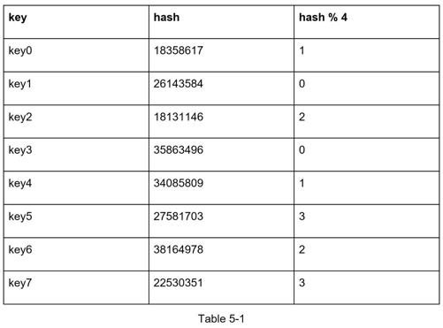
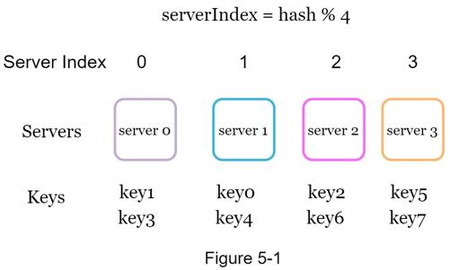
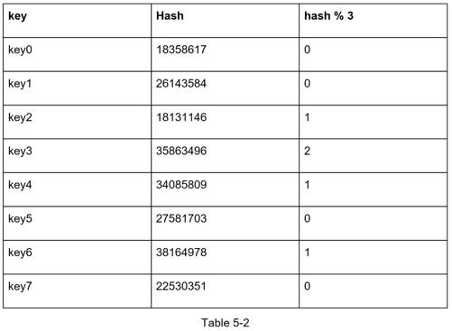
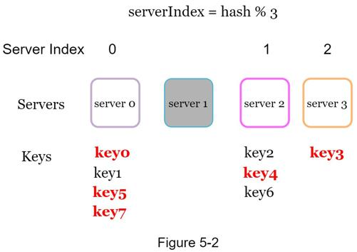

If you have n cache servers, a common way to balance the load is to use the following hash method:
serverIndex = hash(key) % N, where N is the size of the server pool.
Let us use an example to illustrate how it works. As shown in Table 5-1, we have 4 servers and 8 string keys with their hashes.

To fetch the server where a key is stored, we perform the modular operation f(key) % 4. For instance, hash(key0) % 4 = 1 means a client must contact server 1 to fetch the cached data. Figure 5-1 shows the distribution of keys based on Table 5-1.

This approach works well when the size of the server pool is fixed, and the data distribution is even. However, problems arise when new servers are added, or existing servers are removed. For example, if server 1 goes offline, the size of the server pool becomes 3. Using the same hash function, we get the same hash value for a key. But applying modular operation gives us different server indexes because the number of servers is reduced by 1. We get the results as shown in Table 5-2 by applying hash % 3:

Figure 5-2 shows the new distribution of keys based on Table 5-2.

As shown in Figure 5-2, most keys are redistributed, not just the ones originally stored in the offline server (server 1). This means that when server 1 goes offline, most cache clients will connect to the wrong servers to fetch data. This causes a storm of cache misses. Consistent hashing is an effective technique to mitigate this problem.